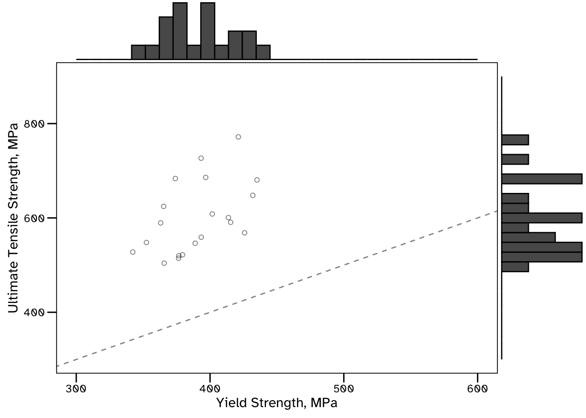

Code
import cmdstanpy, numpy as np, pandas as pd
from scipy import statsGuidance on the Use of Probabilistic Methods for Identifying Data Requirements from Structural Systems
Risk management of the built environment is transitioning towards methods of data-centric engineering. The emergence of structural health monitoring and scalable data analysis will allow for more sophisticated uncertainty quantification of damage and degradation. This information could then inform digital twin representations of structural systems, with the intention of improving decision support to engineers.
Understanding the required quantity and quality of data will continue to be a challenge to engineers. Should sensing systems be retrofit to existing structures? If so, how precise and how reliable do they need to be? Does a malfunctioning sensor require replacement? What supplementary inspection or testing data is required?
Given the availability of free, open-source software tools for data analysis and statistical inference, there is an opportunity to improve engineering workflows. The guidance presented here is intended to be pragmatic and introductory. Example problems are presented (with reference to Eurocodes, Standards and Material Specifications) alongside accompanying code implementations. There is a focus on answering meaningful questions, supporting decision making, and ensuring reproducible and reliable results.
This is a computational document that includes chunks of Python and R code necessary to analyse the data, and solve the decision problems in the various examples. To achieve this, various libraries/packages have been used, and these will need to be installed and loaded for the code to run.
The Python packages that have been used are loaded below.
import cmdstanpy, numpy as np, pandas as pd
from scipy import statslibrary(cmdstanr); library(tidyverse); library(copula);
library(fitdistrplus); library(boot)In addition, some statistical models that have been written in the probabilistic programming language Stan have been used. The data used in the examples, as well as the code used for each exercise can be freely downloaded from this public repository.
Engineering data will often consist of some indirect measurements of a complex physical phenomena. Even sophisticated sensing technologies will only ever provide imperfect information. This data is then analysed in the context of some imperfect representation (a model) of the state of the complex systems that define it. This all leads to the presence of uncertainty in engineering analysis.
Engineers are tasked with making recommendations about the safe and efficient operation of the built environment, accounting for the various uncertainties associated with the task. Historically, structural engineers have used deterministic approaches to perform conservative assessments. Here, uncertain quantities are assigned a value, for instance a strength may be assumed to be the minimum from a set of measurements, and these values are assumed to result in suitably conservative results. There are various challenges associated with this approach, including that of consistently allocating resources to maintain structures that are assessed with differing, implicit and unquantified safety factors. Quantification of uncertainty using probabilistic methods, see Section \(\ref{sect:probabilistic_uq}\), can be used to propagate models of uncertainty though engineering calculations. This can be used to quantify risk on an absolute scale, and produce coherent and consistent decisions.
In any case, uncertainty can be reduced by collecting additional data. While data will generally always provide some value, provided it is relevant, it will not represent a good investment. There are various costs associated with collecting engineering data, including that associated with the risk of exposing inspection personnel to hazardous environments, or collection and storage costs of high-volume streaming data from structural health monitoring technologies.
Value of information analysis, see Section \(\ref{sect:voi}\), allows for the quantification of the expected value that new data provides, in the context of solving a decision problem. This formal statistical procedure can be used to provide quantitative justification for investing (or not) in new data collection opportunities. Though in many cases there may be an intuitive solution to this problem , there may often be cases where engineering teams cannot agree on whether additional data is required. In such cases, a formal statistical procedure can provide quantitative (and replicable, auditable) justification for such actions.
Python and Rstats.norm.rvs(size = 10, loc = 0, scale = 1)array([-0.82952004, -0.27043493, -1.04383418, 0.25331261, -0.01135127,
0.77785836, 1.06388937, 0.3227371 , -1.10932976, -1.93486259])rnorm(n = 10, mean = 0, sd = 1) [1] -1.0156048 -0.4157760 1.9242609 0.3969346 0.5327091 -1.4490339
[7] 1.5974913 -0.4708422 -0.5791902 0.5238492In this example we will consider what information is contained in a set of measurements of yield and tensile strength. The data is presented in Table @tab_strength_data and Figure @fig_strength_data. This data can be downloaded using the below code.
strength_df = pd.read_csv(filepath_or_buffer = "https://raw.githubusercontent.com/DomDF/DCE_guidance/main/data_files/strength_data.csv")
strength_df.head(n = 3) id yield tensile
0 1 415.394479 590.806283
1 2 435.102535 680.617608
2 3 374.046293 683.524267strength_df <- read_csv(file = "https://raw.githubusercontent.com/DomDF/DCE_guidance/main/data_files/strength_data.csv")
strength_df |> head(n = 3)# A tibble: 3 × 3
id yield tensile
<dbl> <dbl> <dbl>
1 1 415. 591.
2 2 435. 681.
3 3 374. 684.The results indicate some variability even though each row presents the result of the same test, using the same machine, on a tensile specimen from the same material. This variability can be attributed to:
Material heterogeneity. Manufacturing processes used to make structural steel results in local hard spots, laminations, inclusions and other anomalies that can locally influence the strength of the material. The presence of such anomalies in the microstructure of a testing specimen will influence the measured properties.
Imperfect measurement data. There is no manufacturing process that creates perfectly homogeneous steel, and there is no measurement of an engineering quantity that will tell us everything we want to know. In this example, the machine used to perform the tests will output results with some precision, which has been quantified by the manufacturers.
strength_mv_plot <- ggplot(data = strength_df, mapping = aes(x = yield, y = tensile))+
geom_point(shape = 1, alpha = 1/2)+
scale_x_continuous(name = 'Yield Strength, MPa', limits = c(300, 600))+
scale_y_continuous(name = 'Ultimate Tensile Strength, MPa', limits = c(300, 900))+
geom_abline(lty = 2, alpha = 1/2)+
ggthemes::theme_base(base_size = 12, base_family = 'Atkinson Hyperlegible')+
theme(plot.background = element_rect(color = NA))
strength_mv_plot |> ggExtra::ggMarginal(type = 'histogram')
Shown here as a table, printed using the below R code:
strength_df |> rename('Test ID' = 'id', 'Yield Strength, MPa' = 'yield', 'Tensile Strength, MPa' = 'tensile') |> knitr::kable()| Test ID | Yield Strength, MPa | Tensile Strength, MPa |
|---|---|---|
| 1 | 415.3945 | 590.8063 |
| 2 | 435.1025 | 680.6176 |
| 3 | 374.0463 | 683.5243 |
| 4 | 401.6319 | 608.4174 |
| 5 | 365.7331 | 504.0710 |
| 6 | 376.6799 | 519.8186 |
| 7 | 365.3381 | 624.4340 |
| 8 | 396.7396 | 685.7945 |
| 9 | 376.4909 | 514.6392 |
| 10 | 421.1487 | 771.7754 |
| 11 | 425.8122 | 568.4605 |
| 12 | 352.4668 | 547.8975 |
| 13 | 393.4283 | 559.1092 |
| 14 | 431.9654 | 647.9011 |
| 15 | 363.0708 | 589.4842 |
| 16 | 393.3109 | 726.6864 |
| 17 | 379.4241 | 521.7981 |
| 18 | 413.7369 | 600.7571 |
| 19 | 388.8842 | 546.4207 |
| 20 | 342.2702 | 527.6821 |
This variability can be approximated using probability distributions. These should be considered to be a model
stats.norm.fit(data = strength_df['yield'].values, method = 'MLE')(390.63377067499994, 26.256897184774186)fitdist(data = strength_df$yield, distr = 'norm', method = 'mle')Fitting of the distribution ' norm ' by maximum likelihood
Parameters:
estimate Std. Error
mean 390.6338 5.871221
sd 26.2569 4.151580These distribution parameters represent those with the highest score (likelihood) of the range considered. However, there may often not be a clear maximum likelihood, particularly when estimating distribution parameters from a small dataset. In these cases the statistical uncertainty results in many possible values being credible (or having a similar likelihood). These should not be dismissed, and certainly not before there is enough evidence for a model to be confident of it’s maximum likelihood estimates.
For instance, with only two or three measurements of yield strength, it is important to reflect that a maximum likelihood probabilistic model will be unsure of the distribution parameters that it estimates. The single number (point estimate) result could change significantly after including just a few more tests. Describing the variability in cases like this can help distinguish a highly uncertain model with a highly informed model, and this distinction is important when they are being used for decision support.
One method of quantifying variability in a maximum likelihood estimate is to find confidence intervals…..
est_norm_mean <- function(x, id) {fitdist(x[id], distr = 'norm')$estimate[1]}
bootstrap_est <- strength_df$yield |>
boot(statistic = est_norm_mean, R = 1e3) |>
boot.ci(conf = 0.95)
bootstrap_est$normal |> as_tibble() |>
rename(lower_bound = V2, upper_bound = V3)# A tibble: 1 × 3
conf lower_bound upper_bound
<dbl> <dbl> <dbl>
1 0.95 379. 402.Sometimes known as probabilistic machine learning. We will…
import tensorflow as tf
import tensorflow_probability as tfp
locations = tfp.distributions.Normal(loc = 0, scale = 1).sample(sample_shape = 10, seed = 2408)
data = tfp.distributions.Bernoulli(logits = 2 * locations).sample()
Bayesian_logistic_model = tfp.glm.Bernoulli()Fitting the model…
model_fit = tfp.glm.fit(model_matrix = locations[:, tf.newaxis], response = tf.cast(data, dtype = tf.float32), model = Bayesian_logistic_model)
model_fit[<tf.Tensor: shape=(1,), dtype=float32, numpy=array([1.1169219], dtype=float32)>, <tf.Tensor: shape=(10,), dtype=float32, numpy=
array([-0.183359 , -0.3687913 , -1.4660629 , -0.56953657, -1.3154848 ,
-0.82824624, -0.34668016, -0.8278866 , -1.3747286 , -0.36824912],
dtype=float32)>, <tf.Tensor: shape=(), dtype=bool, numpy=True>, <tf.Tensor: shape=(), dtype=int32, numpy=4>]Interpretting assessment results before arriving at decision